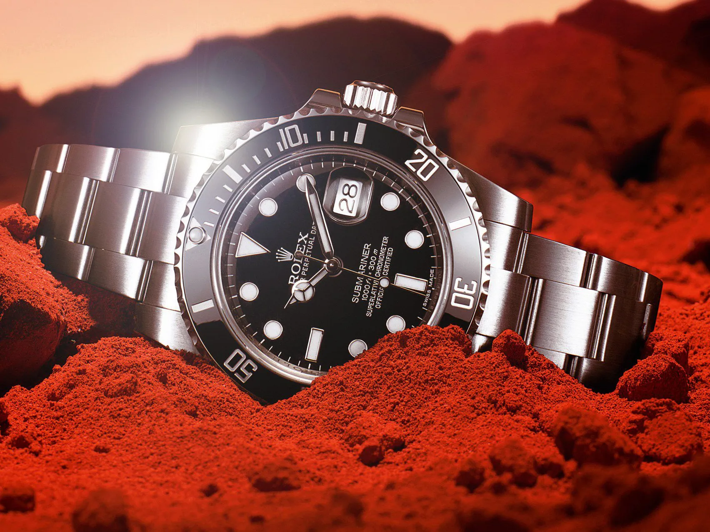

Launched in 1953, the Rolex Submariner is the first divers’ wristwatch to be waterproof to a depth of 100 metres (330 feet) – now 300 metres (1,000 feet). Its major features, such as the graduated rotatable bezel, the luminescent display, the large hands and hour markers, have been a driving force in the creation of the long line of Rolex divers’ watches which followed. The Submariner is an iconic timepiece whose renown now extends beyond the professional world it was first designed for. The Submariner, the ultimate standard.

- Specificaties
- Prijs: $3.917
- Opwinden: Handopwind
- Bouwjaar: 1997
- Referentienummer: 3570.50.00
- Hoogte: 13.8mm
- Waterdicht:5 ATM
- Glas: Kuntstof
- Diameter: 42mm